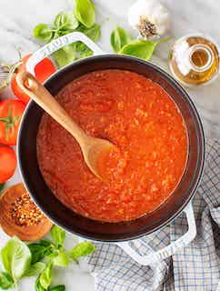

Fresh Tomato Sauce

Tomato Sauce
Tomato sauce is the foundation of many Italian dishes. So it has to be good!
Although simple to make, it can easily be done wrong with just a little too much of this,
or not eonough of that. Follow this recipe and you'll be good to go!
Ingredients
- 16-20 Plum tomatoes
- 1 tbs dry oregano per cup of tomatoes
- 1/4 cup chopped onion for each cup of tomatoes
- 2 garlic cloves finely chopped for each cup of tomatoes
- Fresh basil
- Salt & pepper to taste
- Red pepper flakes to taste if you want a little heat (optional)
- OO
- Sugar to sweeten (optional)
Directions
Prep
- Cut an x slit on the tops of each tomato
- Boil a pot of water
- When the water starts to boil, turn the heat off and put them in a bowl of ice water for 1 minute
- After 1 minute, remove the tomatoes and place them ina bowl of ice water for about 1 minute
- Peel the skin off of the tomatoes
- Slice the tomatoes in half lengthwise
- Remove the seeds from the tomatoes, scooping them out with a spoon
- Chop the tomatoes to chunky or a fine chop. (Your preference)
Cooking
- Cover the bottom of the pot with oilive oil and heat on med low
- Add onions and sauteè until they turn translucent
- Add garlic and sauteè until it turns slightly brown
- Add red pepper flakes if using
- Stir, don't let the garlic burn
- Add tomatoes
- Add oregano
- Add salt & pepper
- When sauce starts to bubble, lower heat and let simmer for 1 - 1 1/2 hous stirring occasionally
- Add fresh basil 5 minutes befor the sauce is done
- Taste for sweetness and add sugar to taste
- FINITO!